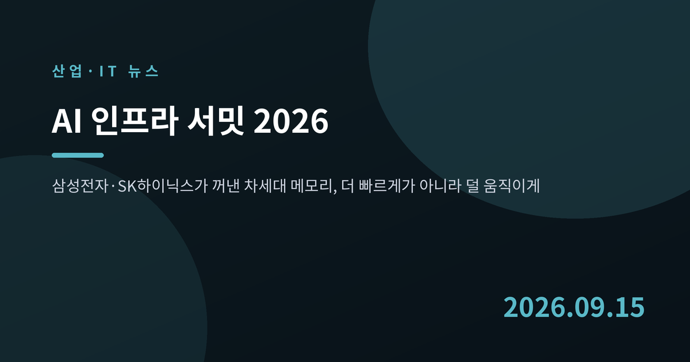
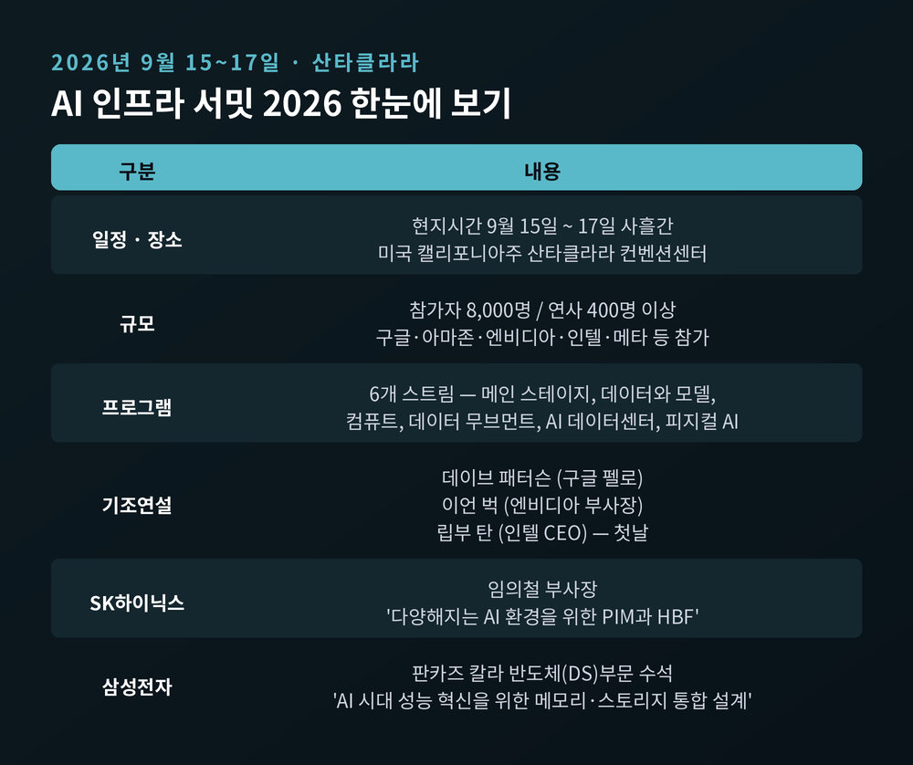
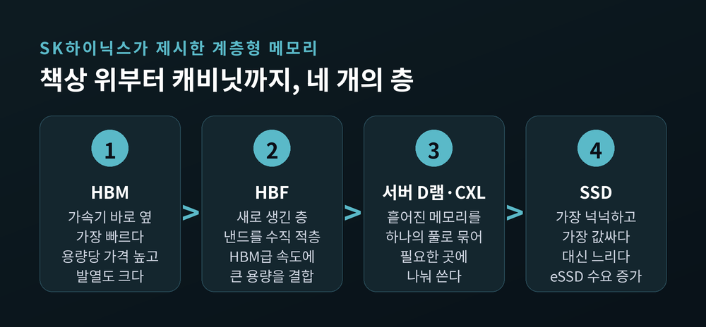
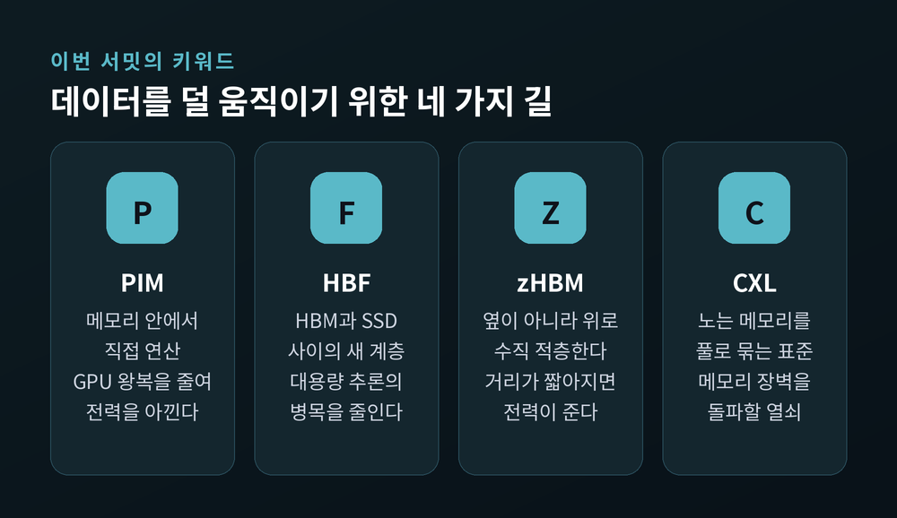
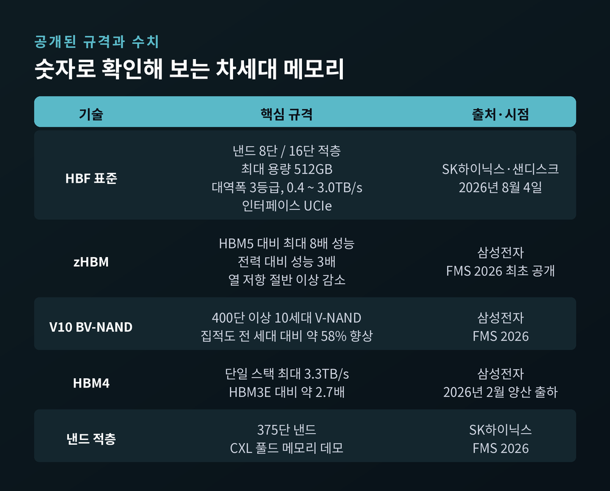
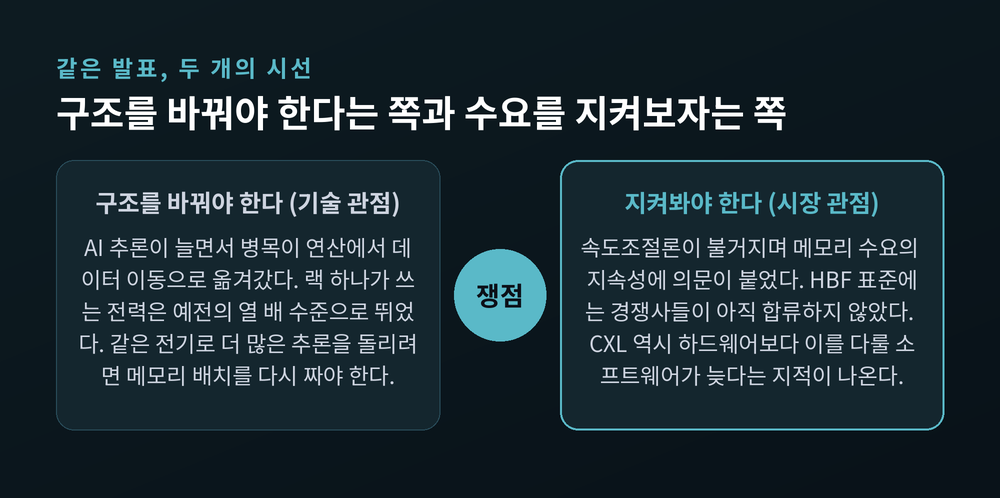

AI 인프라 서밋 2026 개막, 삼성·SK하이닉스가 바꾸는 메모리 구조
이번 글에서는 9월 15일 미국 산타클라라에서 막을 올린 'AI 인프라 서밋 2026'을 정리해 보겠습니다. 삼성전자와 SK하이닉스가 이 자리에서 무엇을 내놓으려 하는지, 그리고 그것이 왜 단순한 신제품 발표와 다른지를 살펴보려 합니다.
먼저 세 줄로 요약하겠습니다.
- AI 인프라 서밋 2026이 9월 15일부터 17일까지 사흘간 산타클라라 컨벤션센터에서 열립니다.
- 삼성전자와 SK하이닉스는 HBM 단품이 아니라 메모리와 스토리지를 통째로 다시 배치하는 설계를 들고 나왔습니다.
- 핵심은 속도가 아니라 전력입니다. 데이터를 덜 움직이는 쪽이 이기는 국면으로 넘어가고 있습니다.

사흘 동안 산타클라라에서 벌어지는 일
행사는 현지시간 9월 15일 시작해 17일에 끝납니다. 장소는 캘리포니아주 산타클라라 컨벤션센터입니다. 주최 측이 밝힌 규모는 참가자 8,000명, 연사 400명 이상입니다.
프로그램은 여섯 갈래로 나뉩니다. 메인 스테이지, 데이터와 모델, 컴퓨트, 데이터 무브먼트, AI 데이터센터, 피지컬 AI입니다. 이름만 봐도 무게중심이 어디로 옮겨갔는지 짐작이 됩니다. 예전 반도체 행사가 '칩'을 중심으로 돌았다면, 지금은 '데이터가 어떻게 움직이는가'가 독립된 한 축을 차지합니다.
기조연설 명단도 상징적입니다. 구글 펠로 데이브 패터슨이 연산 증가가 AI를 어디까지 데려갈 수 있는지를 짚고, 엔비디아 하이퍼스케일·HPC 컴퓨팅 부사장 이언 벅이 에이전틱 AI를 위한 인프라를 다룹니다. 인텔 최고경영자 립부 탄은 첫날 '실리콘에서 시스템으로'라는 제목으로 무대에 오릅니다.
한국 기업의 자리도 확정돼 있습니다. SK하이닉스에서는 임의철 부사장이 '다양해지는 AI 환경을 위한 PIM과 HBF'를 주제로 발표합니다. 삼성전자에서는 반도체(DS)부문 판카즈 칼라 수석이 'AI 시대의 성능 혁신을 위한 메모리 및 스토리지 통합 설계'를 이야기합니다. 두 회사 모두 지난해 행사에 이어 2년 연속 참가입니다.

메모리 회사가 '시스템'을 말하기 시작한 이유
발표 제목을 다시 보시면 공통점이 보입니다. 한쪽은 'PIM과 HBF', 다른 쪽은 '메모리 및 스토리지 통합 설계'입니다. 둘 다 특정 제품 이름이 아닙니다. 설계 방식에 관한 이야기입니다.
배경에는 AI 추론의 확산이 있습니다. 모델을 학습시키는 단계에서는 연산 능력이 승부처였습니다. 그런데 학습을 마친 모델이 실제 서비스로 들어가 매일 수억 건의 답을 만들어내기 시작하면, 병목의 위치가 바뀝니다. GPU가 놀고 메모리가 헐떡이는 상황이 벌어집니다.
임의철 SK하이닉스 부사장은 다른 강연에서 이 문제를 이렇게 요약한 바 있습니다. GPU 성능의 상당 부분이 데이터를 기다리느라 낭비되고 있고, 그 해법은 메모리 쪽에 있다는 것입니다. 연산 장치를 아무리 늘려도 데이터가 제때 도착하지 않으면 소용이 없다는 뜻입니다.
그래서 두 회사가 들고 나온 답이 '구조를 바꾸자'입니다. 더 빠른 HBM을 하나 더 만드는 것으로는 부족하다는 판단인 셈입니다.
계층형 메모리 — 한 종류로는 감당이 안 됩니다
SK하이닉스가 제시하는 개념은 계층형 메모리(Tiered Memory)입니다. HBM과 서버 D램, 낸드, SSD, 그리고 CXL 기반 기술을 따로 파는 상품이 아니라 하나의 층층 구조로 엮겠다는 구상입니다.
비유를 들어 보겠습니다. 책상 위에 자주 보는 자료를 두고, 서랍에 이번 주 쓸 서류를 넣고, 캐비닛에 지난 자료를 보관하는 식입니다. 전부를 책상 위에 올려둘 수는 없습니다. 비싸고, 자리가 없고, 무엇보다 전기를 너무 먹습니다.
AI 서버도 같습니다. 가장 빠른 HBM은 용량당 가격이 높고 발열도 큽니다. 반대로 SSD는 값싸고 넉넉하지만 느립니다. 그 사이가 텅 비어 있었던 것이 그동안의 문제였습니다.
SK하이닉스는 지난 8월 FMS 2026에서 이 구상을 처음 체계적으로 펼쳐 보였습니다. 375단 낸드와 CXL 풀드 메모리 데모를 함께 내놓으면서, 회사는 이를 '풀스택 AI 메모리'라고 불렀습니다.

이번에 이름이 붙은 네 가지 기술
용어가 낯설 수 있어 하나씩 풀어 보겠습니다.
PIM(Processing-In-Memory) 은 메모리 안에 연산 기능을 넣는 기술입니다. 지금까지 메모리는 데이터를 보관만 하고 계산은 GPU가 했습니다. 그러다 보니 데이터가 둘 사이를 쉴 새 없이 오갑니다. PIM은 간단한 계산을 메모리가 직접 처리해 이 왕복을 줄입니다. SK하이닉스는 자사 PIM 제품 AiM을 여러 개 묶은 가속기 카드 AiMX를 갖고 있습니다.
HBF(High Bandwidth Flash) 는 HBM과 SSD 사이에 새로 끼워 넣는 계층입니다. 낸드를 수직으로 쌓아 HBM에 가까운 속도를 내면서 용량은 훨씬 크게 가져가는 방식입니다. SK하이닉스는 지난 8월 4일 샌디스크와 함께 이 기술의 첫 표준 규격을 공개했습니다.
zHBM 은 삼성전자가 FMS 2026에서 처음 공개한 3D 메모리 구조입니다. HBM을 AI 가속기 '옆'이 아니라 '위'에 수직으로 쌓습니다. 거리가 짧아지면 데이터가 이동하며 잃는 전력과 시간이 줄어듭니다.
CXL(Compute Express Link) 은 서버마다 흩어져 놀고 있는 메모리를 하나의 풀로 묶어 필요한 곳에 나눠 쓰게 하는 표준입니다. 2026년 들어 CXL은 실험실 용어에서 실제 배치되는 기술로 넘어왔습니다. 마벨은 차세대 CXL 스위치를 두고 "AI의 메모리 장벽을 돌파한다"고 표현했습니다.
네 기술의 목적은 하나로 모입니다. 데이터를 덜 움직이는 것입니다.

숫자로 확인해 보는 공개 규격
말로만 들으면 추상적이니 공개된 수치를 옮겨 보겠습니다.
HBF 표준은 낸드 다이를 8단 또는 16단으로 쌓아 최대 512GB 용량을 정의했습니다. 대역폭은 세 등급으로 나눠 약 0.4TB/s에서 3.0TB/s까지 구현하도록 규정했습니다. 인터페이스로는 업계 표준인 UCIe를 채택해 GPU와 CPU 등 서로 다른 프로세서에도 붙일 수 있게 했습니다.
삼성전자는 zHBM 기반 차세대 인터페이스 시스템이 HBM5와 견줘 최대 8배의 성능과 3배의 전력 대비 성능을 낼 수 있다고 밝혔습니다. 열 저항도 절반 이상 낮췄다고 설명했습니다. 함께 공개한 V10 BV-NAND는 400단을 넘는 10세대 제품으로, 집적도가 전 세대보다 약 58% 높아졌습니다.
이미 양산에 들어간 제품의 성적도 참고가 됩니다. 삼성전자가 올해 2월 세계 최초로 출하한 HBM4는 단일 스택 기준 최대 3.3TB/s의 대역폭을 냅니다. 전작인 HBM3E의 약 2.7배입니다.
다만 여기에는 단서를 달아야 하겠습니다. 위 수치는 대부분 제조사가 스스로 내놓은 것이고, 독립된 제3자 벤치마크로 검증된 값이 아닙니다. zHBM의 비교 대상인 HBM5는 아직 세상에 나오지 않은 규격이기도 합니다.

진짜 병목은 전력입니다
왜 이렇게까지 구조를 손보는가. 답은 전기 요금에 있습니다.
AI 서버가 쓰는 전력은 2025년 95TWh에서 2026년 175TWh로 늘어날 것으로 전망됩니다. 냉각을 비롯한 부대 인프라 전력도 같은 기간 159TWh에서 195TWh로 커집니다. 2026년 전 세계 데이터센터 전력 수요는 132GW에 이를 것으로 예상됩니다. 가트너는 AI 경쟁의 새로운 병목으로 아예 전력을 지목했습니다.
랙 하나가 쓰는 전력도 달라졌습니다. 예전에는 5~15kW면 충분했습니다. 지금은 50~130kW 수준입니다. 2026년 이후 새로 짓는 AI 데이터센터는 대부분 액체냉각을 써야 할 것으로 전망됩니다.
이 맥락에서 보면 PIM이나 zHBM이 내세우는 '전력 효율'은 부수적 미덕이 아닙니다. 같은 전기로 얼마나 많은 추론을 돌릴 수 있느냐가 곧 사업성이기 때문입니다. SK하이닉스는 PIM을 쓰면 에너지 소비를 기존 대비 80% 수준까지 줄일 수 있다고 주장합니다. 물론 이 역시 회사 측 수치입니다.
쟁점 — 기술은 앞서가는데 시장은 망설입니다
기술 발표가 이어지는 동안 증시는 다른 방향을 보고 있습니다.
하루 전인 9월 14일, 이른바 'AI 속도조절론'이 부상하며 반도체주가 흔들렸습니다. SK하이닉스는 5.13% 내린 171만 9,000원, 삼성전자는 3.47% 내린 25만 500원에 거래되는 장면이 나왔습니다. AI 개발 속도를 늦춰야 한다는 주장이 힘을 얻으면서 메모리 수요가 위축되는 것 아니냐는 우려가 반영됐다는 해석입니다.
전문가 의견은 갈립니다. 단기 충격은 불가피하다는 쪽이 있고, 장기 성장 궤도는 유지되므로 여파가 길게 가지는 않을 것이라는 쪽도 있습니다. 주문 자체는 아직 꺾이지 않았다는 관측도 나옵니다.
기술 쪽에도 미완의 지점이 있습니다. HBF 표준은 SK하이닉스와 샌디스크가 먼저 공개했지만, 삼성전자와 마이크론은 관망하는 것으로 전해집니다. 업계 단일 표준으로 굳었다고 말하기는 이릅니다. CXL도 마찬가지입니다. 2026년의 질문은 '서버가 CXL을 지원하는가'가 아니라 '무엇을 어디까지 지원하고, 메모리 배치를 다룰 소프트웨어가 성숙했는가'로 옮겨갔습니다. 하드웨어보다 소프트웨어가 늦다는 이야기입니다.

앞으로 무엇을 보면 될까요
세 가지만 꼽아 보겠습니다.
첫째, 표준 경쟁의 향방입니다. HBF에 삼성전자와 마이크론이 합류하는지, 아니면 별도 방식을 들고 나오는지가 관건입니다. 메모리 산업은 표준을 잡는 쪽이 원가에서 앞서 나갑니다.
둘째, 고객사 확정 여부입니다. 삼성전자는 AMD의 차세대 AI 가속기 인스팅트 MI455X에 6세대 HBM4를 공급하기로 했습니다. SK하이닉스는 마이크로소프트의 첫 AI 칩 마이아200에 5세대 HBM3E 12단을 단독 공급합니다. 두 회사는 최근 엔비디아에 7세대 HBM4E 12단 샘플을 나란히 냈습니다. 새 구조가 실제 채택으로 이어지는지가 이번 행사 이후 확인될 대목입니다.
셋째, 전력당 성능 지표입니다. 지금까지는 대역폭 숫자가 홍보의 중심이었습니다. 앞으로는 와트당 토큰 처리량 같은 지표가 전면에 나올 가능성이 큽니다.
정리하면 이렇습니다.
이번 서밋에서 두 회사가 내놓는 것은 더 빠른 칩 한 개가 아닙니다. 메모리를 어디에 어떻게 놓을 것인가에 관한 답안입니다. 아직 표준도 소프트웨어도 완성되지 않았고, 시장은 수요의 지속성을 의심하고 있습니다. 그럼에도 방향 자체는 또렷해 보입니다.
"데이터를 더 빨리 옮기는 경쟁에서, 덜 옮겨도 되게 만드는 경쟁으로."
AI 인프라의 승부처가 어디로 옮겨가느냐고 물으신다면, 저는 연산이 아니라 그 사이를 잇는 길목이라고 답하겠습니다.